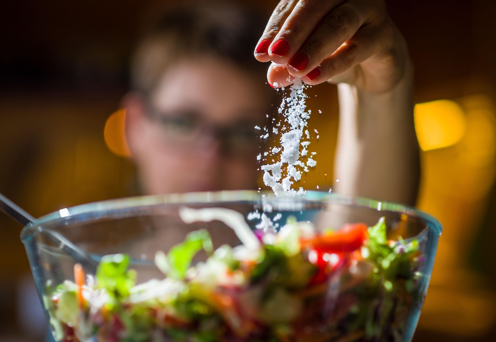

The World Health Organization promotes salt iodisation to control iodine deficiency. In Portugal, the use of iodised salt in school canteens has been mandatory since 2013. The present study aimed to evaluate iodine status in school-aged children (6�12 years) and to monitor the use of iodised salt in school canteens. A total of 2018 participants were randomly selected to participate in a cross-sectional survey in northern Portugal. Children�s urine and salt samples from households and school canteens were collected. A lifestyle questionnaire was completed by parents to assess children�s eating frequency of iodine food sources. Urinary iodine concentration (UIC) was measured by inductively coupled plasma-mass spectrometry. The median UIC was 129 �g/L which indicates the adequacy of iodine status and 32% of the children had UIC < 100 �g/L. No school canteen implemented the iodised salt policy and only 2% of the households were using iodised salt. Lower consumption of milk, but not fish, was associated with a higher risk of iodine deficiency. Estimation of sodium intake from spot urine samples could be an opportunity for adequate monitoring of population means. Implementation of iodine deficiency control policies should include a monitoring program aligned with the commitment of reducing the population salt intake.
Too much salt in our diet leads to high blood pressure, which is the main cause of strokes and a major cause of heart disease, the world�s most common causes of death. There is a wealth of evidence to support this, and is now a worldwide recognised public health priority, with the World Health Organisation issuing a global target of 5g/day by the year 2025. For every gram of salt that we remove from the average UK diet we can save 4,147 lives every year through the reduction in deaths from stroke and heart attack, and we will prevent a further 4,147 non-fatal strokes and heart attacks each year
A cross-sectional survey was conducted in three regions of northern Portugal (T�mega, Grande Porto, and Entre Douro e Vouga) to evaluate iodine status in a school-aged population (6�12 years). T�mega is an inland region known for having in the past a great incidence of thyroid disease, socioeconomic disadvantages, inequalities, and urban-to-rural contrasts. Grande Porto is the most socio-economically developed region in the North of Portugal and it is a coastal region known to have urban-to-suburban-to-rural contrasts. The region of Entre Douro e Vouga is a smaller coastal region with some areas of socioeconomic disadvantage. Geographical differences between these regions provided an opportunity to investigate the influence of living close to the sea on iodine status. A multi-stage sampling method, with clusters at three levels (county, school clusters, and school classes), was implemented to select classes from elementary and middle schools (1st to 6th grade) to provide a representative sample of the population. The 83 schools and 32 school clusters were selected according to the number of children and with stratification for the number of clusters by county and for the type of schools (elementary versus middle). A formal sample size determination was undertaken to ensure the estimation of proportions with an expected margin of error of 3%, assuming a design effect between 1.5 and 2.0 (accounting for the multi-stage complex sampling method), and an intended confidence level of 95%. Based on these assumptions, a sample size higher than 2000 children was needed.
The study was approved by the Ethical Committee of S. Jo�o Hospital Center/Faculty of Medicine of the University of Porto. Data collection was approved by the National Committee for Data Protection and by the Directorate-General of Education. Recruitment and data collection was conducted between December 2015 and May 2016.
To improve the participation rate, selected school clusters were first invited by the Directorate-General of Education to take part in the survey. In addition, a first visit to the school clusters, involving teachers and school board directors, was promoted by the study researchers to schedule the field work activities, to ensure teachers� collaboration in recruiting children, and to provide codified sealed kits to teachers of the selected classes. These kits included a consent form, lifestyle and behaviour questionnaires, and urine and salt collection containers. Upon informed consent, participants were asked to provide a first morning urine sample collected at home on the field work day, along with a sample of household salt. These samples, together with the questionnaires completed by parents, were returned to the researchers on the same day. A salt sample used for school meal preparation was also collected in the school canteens. The lifestyle questionnaire was specifically designed for this study and applied in a pilot study to check for inconsistencies, and assess the applicability and data entry protocols. Validation was not conducted as questions were treated independently and aimed to categorize groups. The questionnaire included questions regarding eating frequency (i.e. never, less than once a month, less than once a week, 2�3 times a week, once a day, or more than twice a day) of iodine natural sources (seafood) and iodine fortified food sources (premade baby cereal). Information on iodised salt consumption and awareness, socio-economic and educational background, and living conditions were also collected. Data regarding the consumption of milk products and eggs by children were collected from an additional online questionnaire completed by a sub-sample of parents (n = 615) as these questions were not included in the lifestyle questionnaire.
